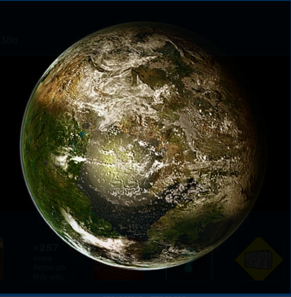
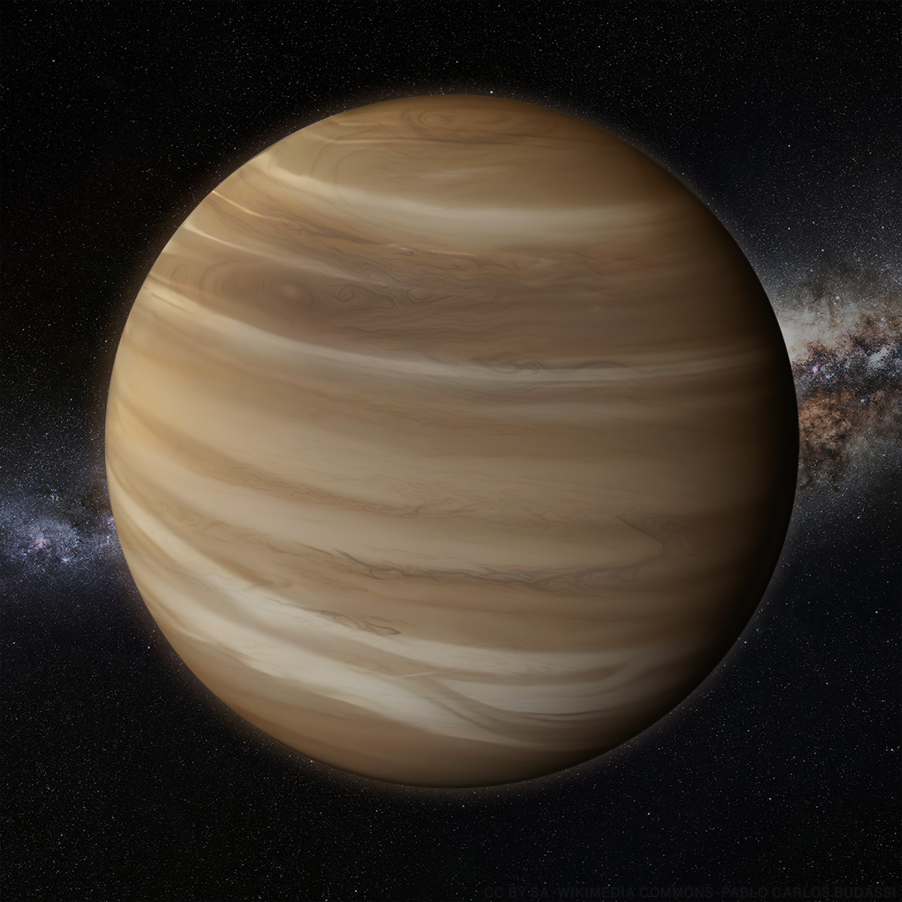
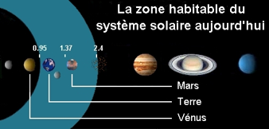
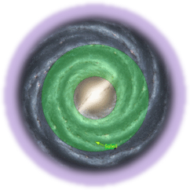

<!DOCTYPE html>
<html>
<head>
<title>exoplanetes.com</title>
<meta charset="UTF-8">
<meta name="viewport" content="width=device-width, initial-scale=1">
<link rel="stylesheet" href="https://www.w3schools.com/w3css/4/w3.css">
</head>

     
  </head>
  <body>
    <style>
    body {
    font-family: Arial, sans-serif;
    margin: 0;
    padding: 0;
    background-color: #040405;
    color: #333;
    background-image: radial-gradient(circle, #fff 1px, transparent 1px),
                      radial-gradient(circle, #fff 1px, transparent 1px),
                      radial-gradient(circle, #fff 1px, transparent 1px),
                      radial-gradient(circle, #fff 1px, transparent 1px),
                      radial-gradient(circle, #fff 1px, transparent 1px);
    background-size: 20px 20px, 40px 40px, 60px 60px, 80px 80px, 100px 100px;
    background-position: 0 0, 10px 10px, 20px 20px, 30px 30px, 40px 40px;
}
</style>

  </body> 
  </html>

<!-- Navbar (sit on top) -->
<div class="w3-top">
  <div class="w3-bar w3-white w3-wide w3-padding w3-card">
    <a href="#home" class="w3-bar-item w3-button"><b>EXO</b> planetes</a>
    <!-- Float links to the right. Hide them on small screens -->
    <div class="w3-right w3-hide-small">
      <a href="#projects" class="w3-bar-item w3-button">Exoplanetes</a>
      <a href="#about" class="w3-bar-item w3-button">L'habitabilité</a>
      <a href="#contact us or l3sa" class="w3-bar-item w3-button">quiz</a>
    </div>
  </div>
</div>

<!-- Header -->
<header class="w3-display-container w3-content w3-wide" style="max-width:1500px;" id="home">
  
  <div class="w3-display-middle w3-margin-top w3-center">
    <h1 class="w3-xxlarge w3-text-white"><span class="w3-padding w3-black w3-opacity-min"><b>EXO</b></span> <span class="w3-hide-small w3-text-light-grey">planetes</span></h1>
  </div>
</header>

<!-- Page content -->
<div class="w3-content w3-padding" style="max-width:1564px">
  <div><style>
    .whiteText {background-color:black;color:white;}
    </style>
    
  <!-- Project Section -->
  <div class="w3-container w3-padding-32" id="projects">
    <h3 style="font-size:4vw", class="whiteText">Exemples d'exoplanetes</h3>
  </div>

  <div class="w3-row-padding">
    <div class="w3-col l3 m6 w3-margin-bottom">
    
      <div class="w3-display-container">
        <div class="w3-display-topleft w3-black w3-padding">kepler-22b</div>
        
      </div>
    </div>
    <div class="w3-col l3 m6 w3-margin-bottom">
      <div class="w3-display-container">
        <div class="w3-display-topleft w3-black w3-padding">luyten b</div>
        
      </div>
    </div>
    <div class="w3-col l3 m6 w3-margin-bottom">
      <div class="w3-display-container">
        <div class="w3-display-topleft w3-black w3-padding">gliese</div>
        
      </div>
    </div>
    <div class="w3-col l3 m6 w3-margin-bottom">
      <div class="w3-display-container">
        <div class="w3-display-topleft w3-black w3-padding">kepler-487b</div>
        
      </div>
    </div>
  </div>


  <!-- About Section -->
  <div class="w3-container w3-padding-32" id="about">
    <h3 style="font-size:4vw", class="whiteText">infos sur les exoplanetes</h3>
    <p class="whiteText" >Les exoplanètes, ou planètes extrasolaires, sont des planètes situées en dehors de notre Système solaire, orbitant autour d'étoiles autres que le Soleil. Ces corps célestes possèdent des caractéristiques très variées en termes de taille, de composition, de température et de conditions atmosphériques. La recherche et l'étude des exoplanètes sont des domaines majeurs en astronomie, notamment dans le cadre de la recherche de la vie extraterrestre et de la compréhension des processus de formation planétaire.
      Les exoplanètes sont classées selon leur taille, leur masse, leur composition et leur position par rapport à leur étoile. Voici les principaux types :
    </p>
  </div>
  <script>
    function myFunction1() {
      var dots = document.getElementById("dots1");
      var moreText = document.getElementById("more1");
      var btnText = document.getElementById("myBtn1");
      
    
      if (dots.style.display === "none") {
        dots.style.display = "inline";
        btnText.innerHTML = "Read more"; 
        moreText.style.display = "none";
      } else {
        dots.style.display = "none";
        btnText.innerHTML = "Read less"; 
        moreText.style.display = "inline";
      }
    }
    </script>
    <script>
      function myFunction2() {
        var dots = document.getElementById("dots2");
        var moreText = document.getElementById("more2");
        var btnText = document.getElementById("myBtn2");
        
      
        if (dots.style.display === "none") {
          dots.style.display = "inline";
          btnText.innerHTML = "Read more"; 
          moreText.style.display = "none";
        } else {
          dots.style.display = "none";
          btnText.innerHTML = "Read less"; 
          moreText.style.display = "inline";
        }
      }
      </script>
      <script>
        function myFunction3() {
          var dots = document.getElementById("dots3");
          var moreText = document.getElementById("more3");
          var btnText = document.getElementById("myBtn3");
          
        
          if (dots.style.display === "none") {
            dots.style.display = "inline";
            btnText.innerHTML = "Read more"; 
            moreText.style.display = "none";
          } else {
            dots.style.display = "none";
            btnText.innerHTML = "Read less"; 
            moreText.style.display = "inline";
          }
        }
        </script>
        <script>
          function myFunction4() {
            var dots = document.getElementById("dots4");
            var moreText = document.getElementById("more4");
            var btnText = document.getElementById("myBtn4");
            
          
            if (dots.style.display === "none") {
              dots.style.display = "inline";
              btnText.innerHTML = "Read more"; 
              moreText.style.display = "none";
            } else {
              dots.style.display = "none";
              btnText.innerHTML = "Read less"; 
              moreText.style.display = "inline";
            }
          }
          </script>
    

  <div class="w3-row-padding w3-grayscale">
    <div class="w3-col l3 m6 w3-margin-bottom">
      
      <h3 class="whiteText">Neptune Chauds</h3>
      
      <p class="whiteText"><b> Composition : </b>Mélange de gaz et de glaces (eau, ammoniac, méthane).<br><span id="dots1">...</span><span id="more1"> <b>Caractéristiques : </b>Planètes de taille et de masse similaires à Neptune, mais situées très près de leur étoile hôte<br>
        <b>Rayon orbital :</b> Moins de 0,1 UA.<br>
        <b>Température : </b>De 1000 à 3000 K, en raison de leur proximité avec l'étoile<br>
        <b>Exemple :</b> 51 Pegasi b, la première exoplanète détectée autour d'une étoile de type solaire</span></p>
<button class="w3-button w3-light-grey w3-block" onclick="myFunction1()" id="myBtn1">Read more</button>
    </div>
    <div class="w3-col l3 m6 w3-margin-bottom">
      
      <h3 class="whiteText">jupiters Chauds</h3>
      <p class="whiteText"><b> Composition : </b>Principalement constituées d'hydrogène et d'hélium, avec des traces d'autres gaz légers.<br><span id="dots2">...</span><span id="more2"> <b>Caractéristiques : </b>Principalement constituées d'hydrogène et d'hélium, avec des traces d'autres gaz légers.<br>
        <b>Rayon orbital :</b> Moins de 0,1 UA.<br>
        <b>Température : </b>Températures plus basses que celles des Jupiter chauds mais bien au-delà de 1000 K.<br>
        <b>Exemple :</b> Gliese 436 b, une exoplanète de type Neptune chaud</span></p>
<button class="w3-button w3-light-grey w3-block" onclick="myFunction2()" id="myBtn2">Read more</button>
    </div>
    <div class="w3-col l3 m6 w3-margin-bottom">
      
      <h3 class="whiteText">Planètes Carbone</h3>
      <p class="whiteText"><b> Composition : </b>Noyau riche en fer, recouvert d'un manteau de carbure de silicium et de diamants.<br><span id="dots3">...</span><span id="more3"> <b>Caractéristiques : </b> Théoriquement, ces planètes sont riches en carbone (carbures) au lieu de silicates.<br>
        <b>Température : </b>Très variable, en fonction de la distance à l'étoile.<br>
        <b>Exemple :</b> 55 Cancri e, une planète où l'on soupçonne une forte concentration de carbone sous forme de diamant.</span></p>
<button class="w3-button w3-light-grey w3-block" onclick="myFunction3()" id="myBtn3">Read more</button>
    </div>
        <div>
        <div class="w3-col l3 m6 w3-margin-bottom">
            
            <h3 class="whiteText"> Planètes Océans</h3>
            <p class="whiteText"><b> Composition : </b>Noyau rocheux entouré d'une vaste étendue d'eau liquide, parfois surmontée de glace ou de vapeur d'eau.<br><span id="dots4">...</span><span id="more4"> <b>Caractéristiques : </b>Planètes entièrement recouvertes d'un océan d'eau liquide, parfois sous une atmosphère épaisse.<br>
                <b>Habitabilité :</b>  Considérées comme de bonnes candidates pour la vie, car l'eau liquide est un ingrédient clé de la vie telle que nous la connaissons.<br>
                <b>Exemple :</b> Kepler-22b, qui pourrait être une planète océan.</span></p>
            <button class="w3-button w3-light-grey w3-block" onclick="myFunction4()" id="myBtn4">Read more</button>
        </div>
        <div>
            <h4 class="whiteText sticky-title" style="font-size:3vw">Qu'est-ce qu'une planète habitable ?</h4>
            <div class="w3-container">
                <!-- ...existing code... -->
            </div>
        </div>
    </div>
    <style>
        .sticky-title {
            position: -webkit-sticky; /* For Safari */
            
            top: 0;
            background-color: rgba(19, 18, 18, 0.8); /* Semi-transparent background */
            padding: 10px; /* Add some padding for better appearance */
            z-index: 1000; /* Ensure the title stays on top */
        }
    </style>
    <div class="w3-container">
      <title>Animation des Planètes</title>
      <head>
        <meta charset="UTF-8">
        <meta name="viewport" content="width=device-width, initial-scale=1.0">
        <title>Animation des Planètes</title>
        <style>
            body {
                margin: 0;
                background: #000;
                overflow: hidden;
            }
    
            .solar-system {
                position: relative;
                width: 100vw;
                height: 100vh;
                display: flex;
                justify-content: center;
                align-items: center;
            }
    
            .sun {
                width: 100px;
                height: 100px;
                background: radial-gradient(circle, yellow, orange, red);
                border-radius: 50%;
                position: absolute;
            }
    
            .orbit {
                position: absolute;
                border: 1px solid rgba(255, 255, 255, 0.2);
                border-radius: 50%;
                animation: rotateOrbit linear infinite;
            }
    
            .orbit:nth-child(2) {
                width: 200px;
                height: 200px;
                animation-duration: 5s;
            }
    
            .orbit:nth-child(3) {
                width: 300px;
                height: 300px;
                animation-duration: 8s;
            }
    
            .orbit:nth-child(4) {
                width: 400px;
                height: 400px;
                animation-duration: 12s;
            }
    
            .planet {
                width: 20px;
                height: 20px;
                background: lightblue;
                border-radius: 50%;
                position: absolute;
                top: 50%;
                left: 100%;
                transform: translate(-50%, -50%);
            }
    
            @keyframes rotateOrbit {
                0% {
                    transform: rotate(0deg);
                }
                100% {
                    transform: rotate(360deg);
                }
            }
        </style>
        </div>
    </head>
    <body>
        <div class="solar-system">
          <div id="stars"></div>
            <div class="sun"></div>
            <div class="orbit">
                <div class="planet"></div>
            </div>
            <div class="orbit">
                <div class="planet"></div>
            </div>
            <div class="orbit">
                <div class="planet"></div>
            </div>

    </div>
    <P class="whiteText" style="font-size: medium;"><b>Une planète habitable </b>est une planète dont les conditions physiques et chimiques permettent le développement et le maintien de la vie telle que nous la connaissons. Cette notion est étroitement liée à la présence d'eau liquide, d'une atmosphère appropriée et d'une température de surface modérée<br> Pour la vie telle que nous la connaissons, au minimum 4 conditions :<br>
      ✓ De l'énergie<br>
      ✓ De la matière carbonée<br>
      ✓ De l'eau liquide<br>
      ✓ Du temps<br>
      <b>L'énergie : </b>elle est fournie par une étoile, ou la planète elle-même : volcanisme, activité interne…<br>
      <b> matière carbonée :</b> inexistante dans les premières générations d'étoiles. Le Carbone est créé dans les étoiles.
      Nécessité de conditions propices aux réactions chimiques.<br>
       <b>L'eau liquide : </b>à une distance favorable de l'étoile. Variable selon la situation de
      l'étoile. N'existe pas à la surface de Mars, mais dans d'autres conditions de pression et de température (en sous-sol) ?<br>
      <b>Le temps : </b>la vie sur Terre est apparue environ 1 milliard d'années après sa formation, sous forme d'organismes
        unicellulaires n'utilisant pas d'oxygène gazeux. A ce jour, 3,5 milliards d'années d'évolution.
        <br>
      </P>
      <h3 class="whiteText" , style="font-size:3vw">Qu'est-ce qu'une zone habitable ?</h3>
    <div class="w3-container">
      
      <p class="whiteText"> zone habitable est celle où l'eau liquide est possible, sachant que dans le système solaire, l'énergie et la matière carbonée existent. La durée de vie de notre étoile donne le temps à la vie de se développer. Pour une exoplanète, la zone dépend de l'étoile. Plus l'étoile est chaude, plus la zone habitable est éloignée.
      </p>
      <h3 class="whiteText" , style="font-size:3vw">Qu'est-ce qu'une zone habitable galactique ?</h3>
    <div class="w3-container">
      
      <p class="whiteText"> Pour que la vie puisse apparaître sur une planète, il ne suffit pas qu'elle soit dans l'écosphère de son étoile; sonsystème planétaire doit se situer assez près du centre de la galaxie pour avoir suffisamment d'éléments lourds qui favorisent la formation de planètes telluriques et des atomes nécessaires à la vie, tels que le fer dans l'hémoglobine ou le cuivre dans l'hémocyanine et l'iode dans la glande thyroïde.Dans notre galaxie, la Voie lactée, la ZHG serait située à 25 000 années-lumière du centre galactique, s'étendant sur 6000 années-lumière et contenant des étoiles vieilles de 4 à 8 milliards d'années. 
      </p>
      <h3 class="whiteText" , style="font-size:3vw">Quelques caractéristiques pour abriter la vie.</h3>
        <p class="whiteText"> • Une étoile très chaude a une durée de vie faible. Le facteur temps empêche<br> alors l'apparition ou l'évolution de la vie, qui de toutes les façons sera détruite<br> par l'explosion de la supernova.<br>
          • Une naine rouge vit très longtemps, est plus froide et a donc une zone d'habitabilité plus proche. Le gros avantage de ces étoiles est qu'elles représentent 80 % des étoiles de la Voie Lactée. La probabilité de trouver des planètes habitables est grande.<br>
          • L'étoile doit aussi être stable pour limiter les brusques changements de climat sur la planète (c'est le cas des naines rouges).<br>
          • Une étoile double, ou multiple, influe sur la stabilité de l'orbite d'une planète <br>tournant autour. L'alternance jour-nuit peut ne plus exister, mais n'est pas <br>strictement nécessaire à l'émergence et à l'évolution de la vie.<br>
          • Les petites planètes sont peu propices à la vie : faible atmosphère, faible protection contre les rayonnements ionisants, peu d'activité géologique.<br>
          • D'autres caractéristiques de la planète doivent être respectées : inclinaison (saisons trop marquées), alternance jour-nuit, forces de marées …<br>

        </p>
    </div>
    <P class="whiteText" style="font-size: medium;">

  <!-- Contact Section -->
  
  <div class="w3-container w3-padding-32" id="contact us or l3sa">
    <h3 class="whiteText" , style="font-size:4vw">Quiz</h3>
    <b><p class="whiteText" , style="font-size:2vw">REPONDEZ A CES QUESTIONS</p></b>
    <form action="/index4.html" method="post">
      <input class="w3-input w3-border" type="text" placeholder="C'est quoi une exoplanete" required name="C'est quoi une exoplanete">
      <input class="w3-input w3-section w3-border" type="text" placeholder="A votre avis comment la vie a t'elle apparue?" required name="comment vous pensez que la vie avait apparait?">
      <input class="w3-input w3-section w3-border" type="text" placeholder="Les avancements  technologiques dans l'espace  ,ont ils un impact sur notre futur?" required name="qu'est ce que vous pensez de notre futur avec les avancements technologiques dans le domaine de l'espace ?">
      <input class="w3-input w3-section w3-border" type="text" placeholder="Quelles sont les défis liés à l'étude des exoplanetes?" required name="Commentaire">
      <button class="w3-button w3-black w3-section" type="submit" href="/index4.html">
        <i class="fa fa-paper-plane"></i> Envoyer vos réponses<a href="/index4.html"></a>
      </button>
    </form>
  </div>
  <script>
    const form = document.getElementById('contact us or l3sa');
    const inputs = form.querySelectorAll('input, textarea'); // Sélectionner tous les champs de saisie (input et textarea)
    const merciMessage = document.getElementById('merciMessage');

    form.addEventListener('submit', function(event) {
        event.preventDefault(); // Empêche la soumission classique du formulaire

        // Masquer uniquement les champs de saisie
        inputs.forEach(input => input.style.display = 'none');

        // Afficher le message de remerciement
        merciMessage.style.display = 'block';
    });
</script>


<title>Quiz Multichoix</title>
<style>
  body {
            font-family: Arial, sans-serif;
            margin: 0;
            padding: 0;
            background-color: #040405;
            color: #333;
            overflow: hidden; /* Prevent scrollbars */
        }

   #stars {
            position: absolute;
            width: 100%;
            height: 100%;
            overflow: hidden;
            z-index: -1; /* Ensure stars are behind other content */
        }

        .star {
            position: absolute;
            background-color: white;
            border-radius: 50%;
            box-shadow: 0 0 5px rgba(255, 255, 255, 0.5);
        }


.quiz-container {
    max-width: 600px;
    margin: 20px auto;
    padding: 20px;
    background: rgba(255, 255, 255, 0.9); /* Slightly transparent white background */
    border-radius: 8px;
    box-shadow: 0 4px 8px rgba(0, 0, 0, 0.2);
}
    h1 {
        text-align: center;
    }
    .question {
        margin-bottom: 20px;
    }
    .choices {
            margin-bottom: 20px;
        }
</style>
</head>
<body>
  <div id="stars"></div>
  <div class="quiz-container">
      <h1>Quiz Multichoix</h1>
      <div id="question-container">
          <h2 id="question" class="whiteText"></h2>
          <div id="options" class="w3-row-padding"></div>
      </div>
      <div id="navigation" class="w3-padding-16">
          <button id="prev" class="w3-button w3-light-grey">Précédent</button>
          <button id="next" class="w3-button w3-light-grey">Suivant</button>
          <button id="submit" class="w3-button w3-light-grey" style="display: none;">Terminer</button>
      </div>
      <div id="result" class="whiteText"></div>
  </div>

  <script>
      const quizData = [
    
    {
        question: "Quelle est la principale source d'énergie pour la Terre ?",
        options: ["La lune", "Le soleil", "Les étoiles", "Le vent"],
       answer:"Le soleil"// L'index commence à 0, donc 1 correspond à "Le soleil"
    },
    {
        question: "Quel est le satellite naturel de la Terre ?",
        options: ["Mars", "La lune", "Jupiter", "Saturne"],
        answer:  "La lune"
    },
    {
        question: "Quelle planète est connue comme la planète rouge ?",
        options: ["Mars", "Vénus", "Jupiter", "Mercure"],
       answer:"Mars"
    },
    {
        question: "Combien de planètes composent le système solaire ?",
        options: ["8", "9", "10", "7"],
        answer:"8"
    },
    {
        question: "Quel gaz est le plus abondant dans l'atmosphère terrestre ?",
        options: ["Oxygène", "Hydrogène", "Azote", "Dioxyde de carbone"],
        answer: "Azote"
    },
    {
        question: "Quel est l'âge estimé de l'univers ?",
        options: ["13,8 millions d'années", "13,8 milliards d'années", "4,5 milliards d'années", "5 millions d'années"],
        answer:"13,8 milliards d'années"
    },
    {
        question: "Quel est le nom de la galaxie où se trouve notre système solaire ?",
        options: ["Andromède", "Voie lactée", "Grand Nuage de Magellan", "Centaurus A"],
        answer:  "Voie lactée"
    },
    {
        question: "Quelle planète a les anneaux les plus visibles ?",
        options: ["Jupiter", "Uranus", "Saturne", "Neptune"],
       answer: "Saturne"
    },
    {
        question: "Quelle est la plus grande planète du système solaire ?",
        options: ["Terre", "Mars", "Jupiter", "Saturne"],
        answer: "Jupiter"
    },
      {
        question: "Comment s'appelle l'étoile la plus proche de la Terre ?",
        options:["Alpha Centauri", "Proxima Centauri", "Sirius", "Le Soleil"],
        answer: "Le Soleil"
        },


        {
            question: "Qu'est-ce qu'une exoplanète ?",
            options: ["Une étoile située en dehors du système solaire","Une planète située en dehors du système solaire","Une galaxie voisine","Un satellite naturel de Jupiter"],
            answer:"Une planète située en dehors du système solaire"
        },
        {
            question: "Quelle est la plus grande planète du système solaire ?",
            options: ["Terre", "Jupiter", "Mars", "Vénus"],
            answer: "Jupiter"
        },
        // Ajoutez plus de questions ici
        {
            question: "Quelle méthode est la plus couramment utilisée pour détecter les exoplanètes ?",
            options: ["Observation directe","Méthode des transits","Méthode des micro-lentilles gravitationnelles","Méthode des astrométries"],
            answer: "Méthode des transits"
        },
        {
            question: " Quelle est la première exoplanète découverte autour d'une étoile de type solaire ?",
            options: ["Proxima Centauri b","51 Pegasi b","Kepler-22b","HD 209458 b"],
          answer: "51 Pegasi b"
        },
        // Ajoutez plus de questions ici
        {
            question: " Qu'appelle-t-on une zone habitable autour d'une étoile ?",
            options:["Une région où les planètes ont une atmosphère dense","Une région où l'eau peut exister sous forme liquide","Une région où la vie est confirmée","Une région proche du centre de la galaxie"],
           answer:"Une région où l'eau peut exister sous forme liquide"
        },
        {
            question: "  Quelle mission spatiale est spécialisée dans la recherche d'exoplanètes ?",
            options: ["Voyager 1","Hubble","Kepler","Cassini"],
            answer: "Kepler"
        },
        // Ajoutez plus de questions ici
    ];

    const questionElement = document.getElementById("question");
        const optionsElement = document.getElementById("options");
        const prevButton = document.getElementById("prev");
        const nextButton = document.getElementById("next");
        const submitButton = document.getElementById("submit");
        const resultElement = document.getElementById("result");

        let currentQuestion = 0;
        let score = 0;

        function showQuestion() {
            const question = quizData[currentQuestion];
            questionElement.innerText = question.question;

            optionsElement.innerHTML = "";
            question.options.forEach(option => {
                const button = document.createElement("button");
                button.className = "w3-button w3-block w3-light-grey w3-margin-bottom";
                button.innerText = option;
                button.addEventListener("click", selectAnswer);
                optionsElement.appendChild(button);
            });
            updateNavigation();
        }

        function updateNavigation() {
            prevButton.style.display = currentQuestion === 0 ? "none" : "inline-block";
            nextButton.style.display = currentQuestion === quizData.length - 1 ? "none" : "inline-block";
            submitButton.style.display = currentQuestion === quizData.length - 1 ? "inline-block" : "none";
        }

        function selectAnswer(e) {
            const selectedButton = e.target;
            const answer = quizData[currentQuestion].answer;

            if (selectedButton.innerText === answer) {
                score++;
            }
        }

        nextButton.addEventListener("click", () => {
            currentQuestion++;
            showQuestion();
        });
        prevButton.addEventListener("click", () => {
            currentQuestion--;
            showQuestion();
        });

        submitButton.addEventListener("click", () => {
            resultElement.innerHTML = `
                <h1>Quiz Completed!</h1>
                <p>Your score: ${score}/${quizData.length}</p>
            `;
        });

        showQuestion();

        function createStars() {
            const starsContainer = document.getElementById('stars');
            const numStars = 100; // Adjust the number of stars as needed

            for (let i = 0; i < numStars; i++) {
                const star = document.createElement('div');
                star.classList.add('star');
                const size = Math.random() * 3; // Random size for stars
                star.style.width = `${size}px`;
                star.style.height = `${size}px`;

                // Random position for stars
                star.style.top = `${Math.random() * 100}vh`;
                star.style.left = `${Math.random() * 100}vw`;

                starsContainer.appendChild(star);
            }
        }

        // Call the function to create stars when the page loads
        window.onload = createStars;
    </script>
    
      
</script>

<div class="credits-section w3-container w3-padding-32">
    <h3 class="whiteText" style="font-size:3vw">Crédits et Sources</h3>
    <div class="credits-content">
        <p class="whiteText" style="font-size: larger;">Images et Ressources:WIKIPEDIA, science.nasa.gov</p>
        <ul class="whiteText" style="font-size: larger;">
            <li>Images des exoplanètes: NASA/JPL-Caltech</li>
            <li>Informations scientifiques: ESA/NASA</li>
        </ul>
        <p class="whiteText" style="font-size: x-large;"><b>Remerciements:</b><br>
          Nous tenons à remercier notre école Flowers high school <br>et l'administration pour leurs efforts a nous encourager pour <br>travailler sur ce projet et un merci special pour notre prof<br> Mohammed Lakhlifi pour son soutien et pour nous avoir <br>proposé ce projet enrichissant.</p>
          <p class="whiteText" style="font-size: x-large;" ><b>projet conçu par Haytam Chaqroun et Malak Znaidi.</b><text-align: justifiy></text-align:></p>
    </div>
</div>


<style>
    .credits-section {
        background-color: rgba(0, 0, 0, 0.8);
        margin-top: 50px;
        padding: 20px;
        border-top: 1px solid rgba(255, 255, 255, 0.1);
    }

    .credits-content {
        max-width: 800px;
        margin: 0 auto;
    }

    .credits-content ul {
        list-style-type: none;
        padding-left: 0;
    }

    .credits-content li {
        margin: 10px 0;
    }
</style>
  </ul>
</div>
</body>
<div class="merci-message" id="merciMessage">
<div class="merci-message" id="merciMessage">
  <h1 class="whiteText">MERCI</h1>
</div>
</div>
 
  

        
<!-- Footer -->
<footer class="w3-center w3-black w3-padding-16">
  <!-- Image of location/map -->


</div>

</a></p>
</footer>

</body>
</html>
